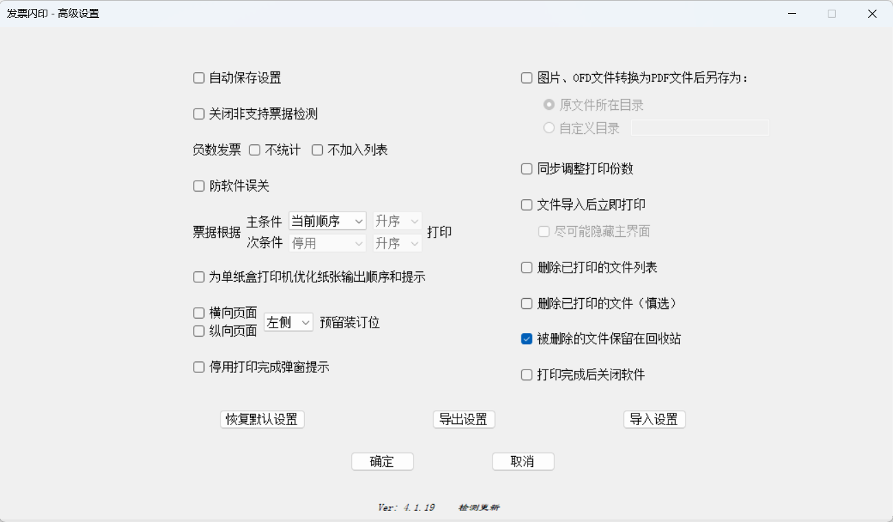

因为单位有很多电子发票需要打印，每次打印都要用reader阅读器打开，选打印机，选份数，选纸张，选纸盒…… 当然，有些发票有清单页的，以上步骤请再重复一遍…… 多张发票请重复N遍……
忍了多年，终于决心开发一款方便用于打印PDF发票的辅助工具，无需安装阅读器！
使用说明：
1、文件导入数量不限，但单个文件限制是10页。支持PDF、OFD和图片版电子发票（非以上三种文件会自动跳过）。文件导入方式： 可在软件界面将文件拖入；可将文件拖至与PrintPDF.exe快捷方式或PrintPDF.exe可执行文件处导入； 可点击按钮“+”添加文件到列表，按钮在“文件列表”右侧。
2、被用红色标记的文件名可能是未知的票据类型或不是电子发票，文件不会被打印。可根据提示临时取消限制，或者高级设置中永久取消限制。
3、当页面上下两边的长度大于左右两边的长度，打印由横向页面控制，反之由纵向页面控制。
4、支持一张A4纸划分为两份或三份，横向页面 - A4 - A4纸设置，发票多合一开启：多张发票同一张纸；发票多合一关闭：一式多份模式。
5、在本软件中，宽140、120-127mm的纸张，都算是A5纸，当打印机提示请放入A5纸时，请将凭证纸放入打印机即可。
6、双击文件列表即可预览，可鼠标滚轮控制页面缩放，双击预览界面可勾选。
7、支持保存打印机、打印份数、纸张、颜色、纸盒等设置（文件列表不保存），勾选保存设置并关闭软件界面即可完成保存设置操作，也可在高级设置勾选自动保存设置 。
8、点击打印后，如突然想取消此次打印任务，可以点击主界面上的取消打印（不支持远程共享打印机）。
9、单纸盒打印机纸张输出优化（同一台打印机，同时使用两种规格纸张此项才会生效）。
10、软件无需安装，解压即用。
软件已知问题：
部分机器报毒：纯属误报，因为软件使用了代码混淆，加入白名单即可。
由于spire.pdf.dll免费版本的限制，OFD只支持前3页转换为PDF。